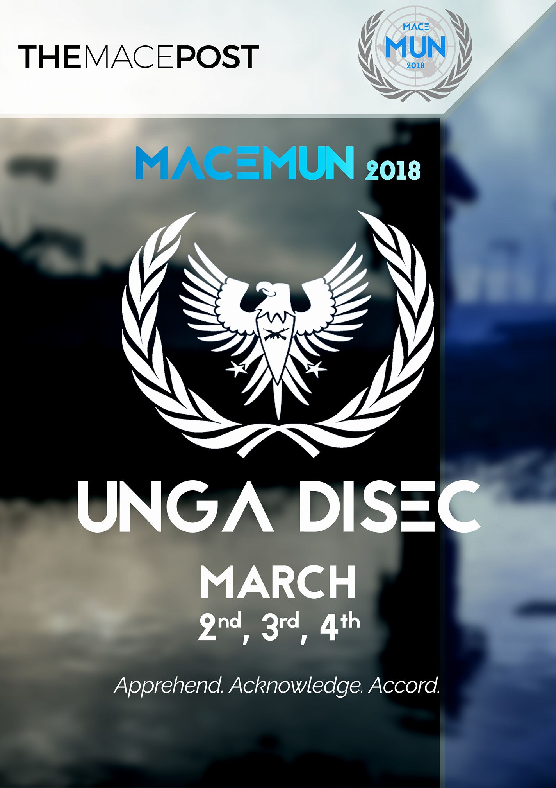

The First Committee of the General Assembly, formed in 1945, DISEC is designated to advise on matters of international security and disarmament, and serves as a forum for the international community to debate issues pertaining to creating and maintaining global security. Since its inception, DISEC has dealt with threats to international security in regions all over the world.
Moreover, negotiations in the First Committee has lead to the creation of nearly all international treaties regarding disarmament. DISEC’s main contribution to preserving and creating global security, its numerous recommendations for peacekeeping missions to the UN Security Council, also cannot be overlooked.

UN Security Council
The First Committee of the General Assembly, formed in 1945, DISEC is designated to advise on matters of international security and disarmament, and serves as a forum for the international community to debate issues pertaining to creating and maintaining global security. Since its inception, DISEC has dealt with threats to international security in regions all over the world.
Moreover, negotiations in the First Committee has lead to the creation of nearly all international treaties regarding disarmament. DISEC’s main contribution to preserving and creating global security, its numerous recommendations for peacekeeping missions to the UN Security Council, also cannot be overlooked.
Continuous Crisis Committee
To quote John F Kennedy ,"When written in Chinese, the word 'crisis' is composed of two chinese character strokes ( 危机 ); One represents DANGER( 危) and the other represents OPPURTUNITY ( 机 )".
We present to you the third committee of MACEMUN 2018, The Continuous Crisis Committee (CCC).
Step into a committee so intense that you will think it is real life until someone calls for an unmoderated Caucus. The CCC challenges a delegate’s critical thinking and impromptu debating skills in a way no other committee could. This is a committee where updates and directives could do anything from starting world war 3 to establishing world peace. This is a committee where new alliances may be formed and old ones may be broken.
International Press
The United Nations is an international body, tasked with maintaining world Peace and the International Press exists to make sure the no one turns a blind eye on the UN's efforts , with evidences of the same being ensured via comprehensive documentation after a thorough study by the reporters themselves. With intense press conferences and the constant sound of a camera shutter, the International Press is tasked with documenting the proceedings of entire conference. Afterall, we write to taste life twice ; once in the moment and other in retrospect